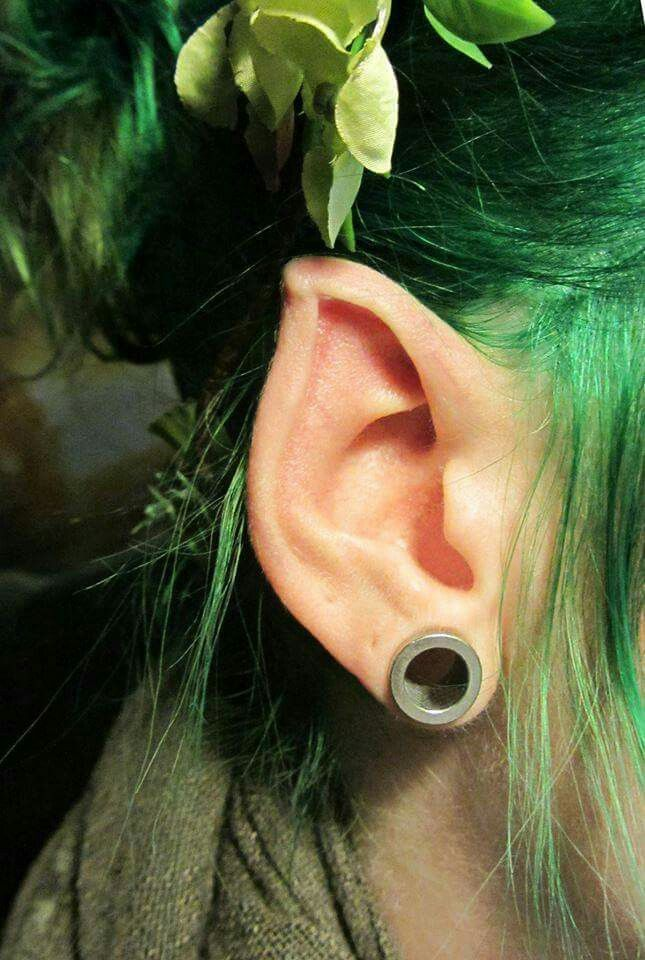

Consiste en realizar una herida en la piel con la finalidad de dejar una cicatriz. Existen tres técnicas: Una se hace con cortes superficiales en la primer capa de la piel con dos o tres milímetros de profundidad, se calca el diseño y después con un bisturí se realizan los cortes. Otra, la técnica conocida como branding, implica una quemadura que puede hacerse con láminas de metal al rojo vivo o con un electro-cauterizador, el cual deja una herida más fina por ser una especie de lápiz con punta en "u" que va quemando la piel. La otra técnica consiste en la remoción de trozos de piel con un escalpelo, según lo requiera el diseño elegido
Es una modificación corporal en la que la lengua se corta por la mitad desde la parte central hasta la punta o, dicho de otro modo, se trata de imitar una de las principales características de las serpientes y los lagartos.
Consiste en la implantación de objetos debajo de la piel, por medios quirúrgicos. Los implantes pueden ser de silicona y vienen con diversas formas. El procedimiento de implantación intradermal es extremadamente doloroso, ya que no se utiliza anestesia para realizarlo, simplemente se abre un orificio en la zona próxima a la localización definitiva del implante y luego se sutura como cualquier herida.
Es el proceso de alterar la forma del oído humano como una práctica de modificación corporal, que a menudo resulta en una apariencia no humana.
También llamado corneal o queratopigmentacion, es un tatuaje que se realiza en la parte esclerótica o la córnea del ojo. Las razones de esta práctica incluyen la mejora de la apariencia estética y de la vista.